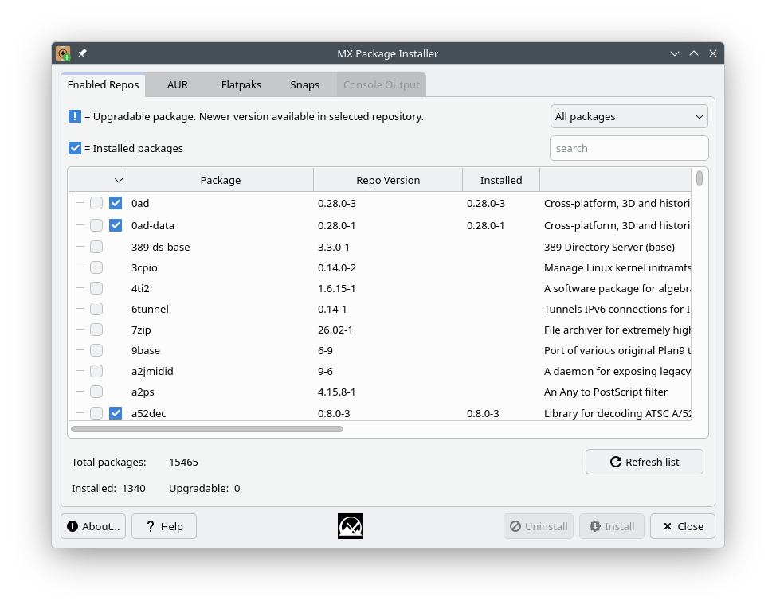
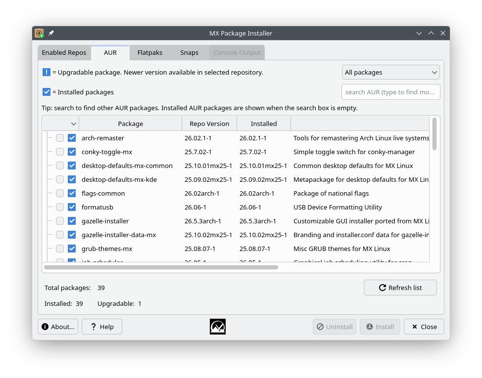
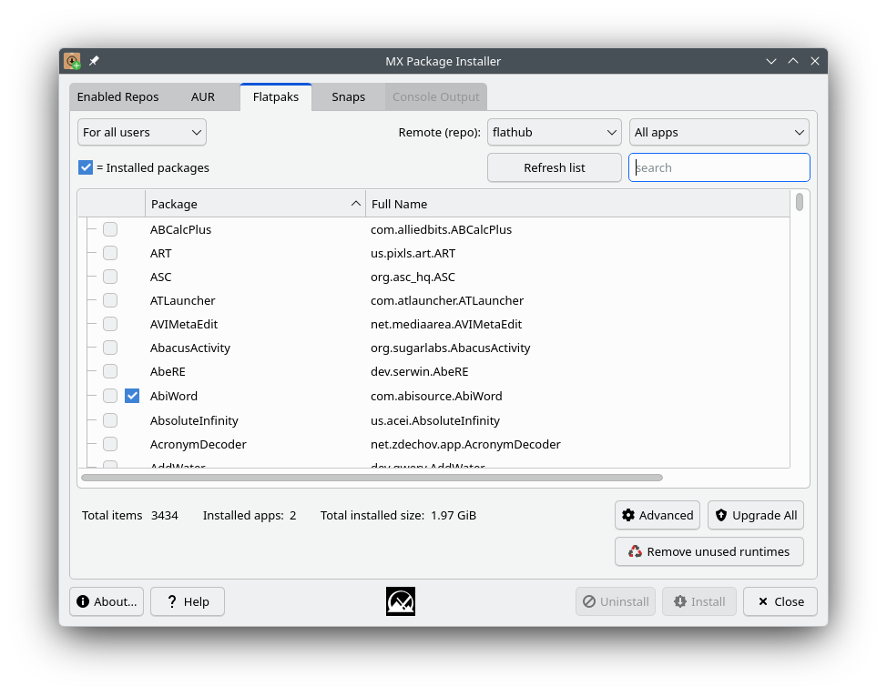
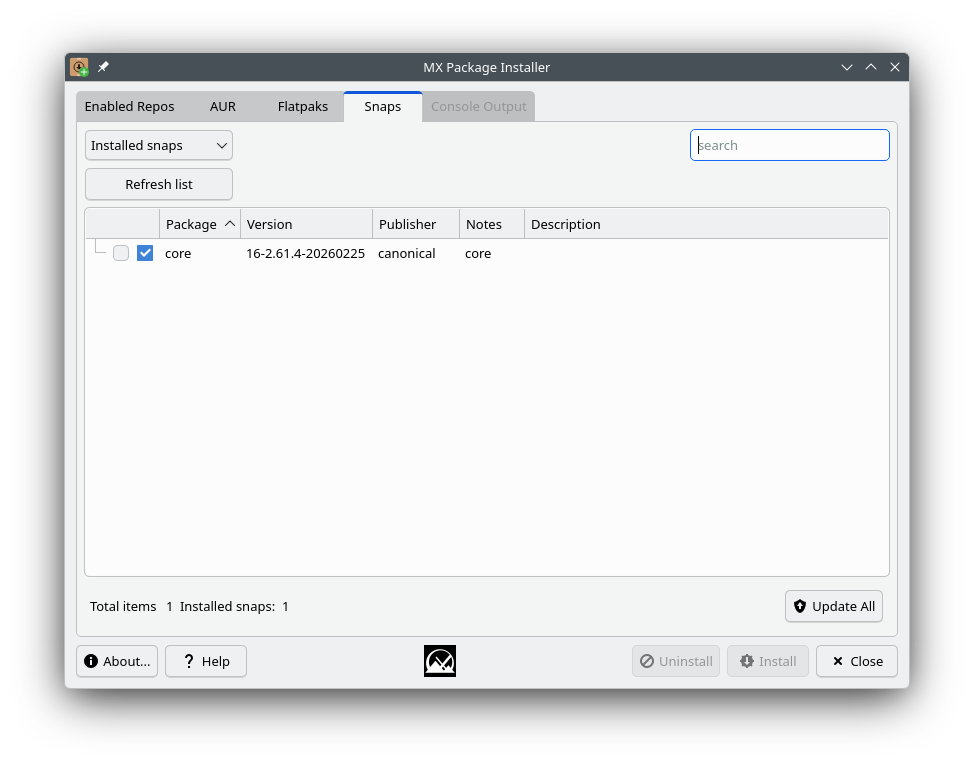

HELP: MX Package Installer
Launch it from your desktop's application menu, or run mx-packageinstaller from a terminal. You'll be prompted for your password whenever a privileged action — syncing repositories, installing or removing packages — needs it.
Enabled Repos

This is the tab you land on, and gives you access to every package available in your system's enabled pacman repositories (core, extra, multilib, and any others you've configured). It has a limited feature set and is not a replacement for a full package manager like pacman itself or a front-end such as pamac; consider MX Package Installer supplementary to those.
- Search for a package or check the boxes directly, then click Install.
- The “Installed” column shows a version number when it differs from the version in the repos.
- Use the drop-down above the list to filter by status: All packages, Installed, Upgradable, Not installed, or Autoremovable. The filter works together with the search box next to it.
- “Autoremove packages” and “Upgrade All” buttons appear when there are orphaned or upgradable packages to act on.
- The Console Output tab is shown while repositories are synced and packages are installed or removed.
AUR

The Arch User Repository is a community-maintained collection of build scripts. Packages there are not vetted by Arch or MX, may be outdated, and could contain broken or malicious build scripts — use with care. A warning to this effect is shown the first time you open this tab; check “Do not show this message again” if you don't want to see it on future launches.
- This tab requires paru to be installed (
pacman -S paru). Without it, searching or installing AUR packages will show an error.
- With the search box empty, the tab shows packages you already have installed from the AUR. Type a term and press Enter to search the AUR live.
- AUR packages are built unprivileged — paru refuses to run as root, the same as on the command line. If the build needs to install its result via pacman, you'll be prompted for your password inline in the Console Output tab; the input is masked while that prompt is active.
- Click “Force update” to refresh the list of installed AUR packages, e.g. after installing or removing one outside of MX Package Installer.
Flatpaks

Flatpaks are a type of package that has all the dependencies included that’s supposed to work on multiple Linux distributions.
- They are not perfect: some might not work well, might not follow your theme, etc.
- The first flatpak that you install will probably pull a huge runtime, so it will take a long time to download and will take a lot of space on your harddrive (probably around 2-3GB), but the next flatpak will most likely be able to use that runtime, so it gets a bit better after you install a couple of flatpaks.
- By default, the “flathub” remote “repo” is used by default. Others can be added via the Advanced dialog.
- You can also install flatpaks via ref files via the Advanced dialog
Snaps

The Snaps tab lets you search, install, remove, and update Snap packages from inside MX Package Installer. This tab only appears if the system is booted with systemd, since the Snap service (snapd) requires it. Note that snapd itself is not in the official Arch repositories — it's built from the AUR, so setting up Snap support here requires paru too.
- If Snap support is not yet set up on the system, click “Set up Snap support” to install snapd (via the AUR) and enable the Snap service.
- Use the drop-down to switch between “Installed snaps” and “Search store”; type a term in the search box and press Enter to search the Snap store.
- Check the packages you want and use the Install/Uninstall buttons as on the other tabs. Progress is shown live in the Console Output tab while Snaps download and install.
- Click “Update All” to update every installed snap at once.
- After installing a Snap app, log out and back in to see it appear in your application menu and to use its commands from a terminal.
Q & A
Development history: Dolphin_Oracle, Adrian
License: here.
v. 20260630